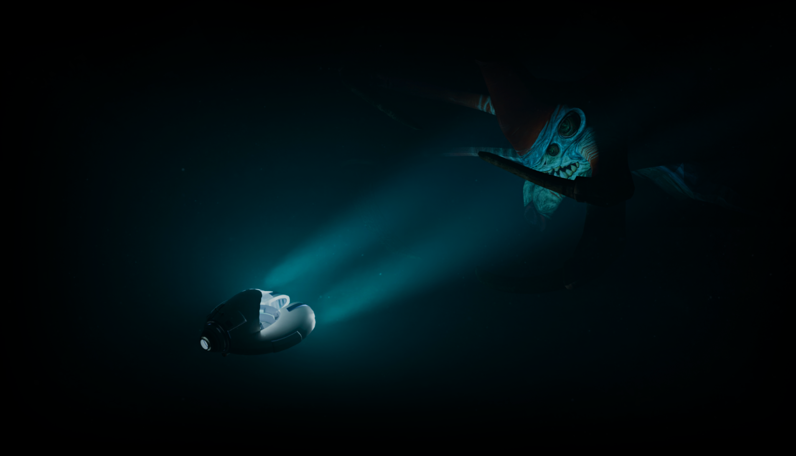

E-HORIZON STUDIO PRESENTS
DEEP
HORIZON
A luz é sua única aliada. O abismo, seu maior juiz.
Um mergulho tático 2D de alta tensão onde cada segundo de oxigênio e cada sombra
moldam seu destino nas profundezas desconhecidas.
A ORIGEM DO DESASTRE
Tudo começou com uma descoberta científica sem precedentes. Um novo elemento metálico com propriedades eletromagnéticas desconhecidas foi identificado. O que deveria ser um avanço para a humanidade tornou-se um catástrofe silenciosa.
O elemento "E-Horizon" é identificado: propriedades eletromagnéticas que desafiam a física. O transporte pelo Estreito de Drake torna-se prioridade máxima.
Uma tempestade anômala consome o cargueiro. Toneladas do elemento contaminam o leito marinho, iniciando uma mutação irreversível no ecossistema.
Sinais militares captam assinaturas energéticas no ponto do desastre. A região é isolada. O que antes era mar, agora é território desconhecido.
Sua tarefa: pilotar o submarino de extração, coletar os fragmentos e escapar. O tempo é seu maior inimigo. O abismo é o seu limite.
COMO JOGAR
Deep Horizon é um jogo 2D side-scroller com mecânica de profundidade progressiva. Cada nível é um mergulho mais fundo — e mais perigoso.
O mapa se expande lateralmente e verticalmente. Quanto mais o jogador desce, mais escuro o ambiente, mais raros as bolhas de oxigênio e mais agressivos os mutantes. A lanterna do submarino é o único aliado contra a escuridão absoluta.
Ao atingir a cota mínima de fragmentos exigida, o jogador deve retornar ao ponto de extração da refinaria antes que o oxigênio acabe — ou que os monstros o alcancem.
MECÂNICAS PRINCIPAIS
EXPLORAÇÃO COM LANTERNA
O ambiente abissal é completamente escuro. A lanterna do submarino projeta um cone de visão limitado. Navegar pelas cavernas e destroços exige atenção total — o que está fora do cone permanece invisível.
COLETA DE FRAGMENTOS
Os fragmentos do elemento estão espalhados pelo mapa — alguns à vista, outros escondidos em fendas e cavernas. Cada missão define uma cota mínima que precisa ser atingida para que a fase seja concluída.
GESTÃO DE OXIGÊNIO
O O₂ é consumido continuamente. Bolhas aparecem esporadicamente pelo mapa e repõem alguns segundos de suprimento. Quanto mais fundo, menos bolhas aparecem. Cada segundo desperdiçado pode ser fatal.
PONTO DE EXTRAÇÃO
O objetivo final de cada missão é retornar ao ponto de extração da refinaria e depositar os fragmentos coletados na canaleta especial. Quanto mais cheio o depósito, maior a pontuação da missão.
CONDIÇÕES DE DERROTA
EXISTEM 3 MANEIRAS DE FALHAR — E TODAS SÃO FATAIS.
OXIGÊNIO ESGOTADO
O indicador de O₂ chega a zero. O piloto não sobrevive à pressão abissal sem suprimento de ar.
ELIMINADO POR MUTANTE
Os 3 corações de vida se esgotam ao ser atacado por criaturas mutadas pelo elemento.
COTA NÃO ATINGIDA
O submarino retorna à refinaria com menos fragmentos do que o mínimo exigido pela missão.
POR QUE DEEP HORIZON?
Diferente de simuladores complexos, focamos na tensão atmosférica e no loop de gameplay tático. O jogador não luta apenas contra monstros, mas contra a ganância de buscar "só mais um fragmento" enquanto o O₂ pisca no vermelho.
-
[✔]
Diferenciação Visual:
Estética Lo-Fi High-Tech que mistura nostalgia 16-bit com iluminação dinâmica moderna.
-
[✔]
Narrativa Ambiental:
O cenário conta a história. O naufrágio não é apenas um mapa, é uma biografia do desastre.
SISTEMA DE COMBATE
O submarino não foi projetado para o combate — mas a situação exigiu adaptações de emergência. O sistema de lâminas de água pressurizada foi improvisado pela equipe de engenharia antes do lançamento.
Projétil de água pressurizada a alta velocidade. Ataque primário. Alcance médio, cadência alta. Eficaz contra formas de vida pequenas e médias.
Leque de três lâminas simultâneas. Cobertura angular de 45°. Ideal para criaturas que atacam em cardumes ou para ambientes de espaço reduzido.
Onda de pressão omnidirecional. Alta energia. Atordoa criaturas ao redor por 2 segundos. Útil para sair de situações cercadas. Recarregamento lento.
MUTANTES DO ABISMO
A exposição ao elemento transformou cada criatura marinha da região. Organismos que antes jamais seriam ameaças tornaram-se predadores de topo. Eles não conhecem medo — e parecem atraídos pelo submarino.
Peixe mutado com bioluminescência tóxica. Ataca em cardumes sincronizados. Individualmente fraco — em grupo, letal.
Medusa gigante com tentáculos impregnados pelo elemento. Quase invisível na escuridão. Paralisa o submarino com descarga elétrica.
Peixe-lanterna mutado de tamanho colossal. Usa o fragmento do elemento como isca luminosa. Detecta vibrações do motor a longas distâncias.
Carangueijo com carapaça cristalizada pelo elemento. Quase imune às lâminas de pressão. Bloqueia passagens e protege zonas de fragmentos.
Anguila colossal que percorre os corredores do naufrágio. Velocidade extrema. Pode seguir o submarino por longos trechos sem perder o rastro.
O ELEMENTO DESCONHECIDO
CLASSIFICAÇÃO: INDEFINIDA
// ARQUIVO CLASSIFICADO — NÍVEL OMEGA //
O elemento exibe propriedades eletromagnéticas sem paralelo na tabela periódica conhecida. Fragmentos emitem luz própria mesmo nas profundezas mais absolutas, sugerindo uma reação interna contínua de origem desconhecida.
A exposição prolongada altera o comportamento biológico de organismos marinhos em minutos. Hipóteses incluem mutação genética acelerada por campo eletromagnético, symbiose forçada ou parasitismo celular. Nenhuma foi confirmada.
O NAUFRÁGIO
O casco do cargueiro original repousa partido ao meio no fundo do abismo. É ao mesmo tempo o maior depósito de fragmentos do elemento e o local mais perigoso de toda a missão.
O interior do navio esconde os maiores depósitos do elemento. Câmaras escuras, corredores alagados e cascos deformados pela pressão criam um labirinto mortal para o submarino.
As criaturas mais resistentes e agressivas escolheram o naufrágio como território. A concentração do elemento parece amplificar o comportamento predatório delas.
Cada compartimento do navio apresenta desafios únicos: câmaras de pressão instáveis, correntes subaquáticas e fragmentos presos em estruturas que precisam ser liberados com o ataque de pressão.
Encontrar a sala de carga principal do navio é o objetivo secreto de missões avançadas — mas o que guarda essa sala é diferente de tudo que o jogador já enfrentou.
O LEGADO DE SUBNAUTICA
A imensidão desconhecida e o medo do que espreita na escuridão. DEEP HORIZON nasceu da paixão pela atmosfera de isolamento e sobrevivência que games como Subnautica eternizaram.

REFERÊNCIA: ATMOSFERACinco pessoas. Uma ideia. Deep Horizon é o resultado de criatividade colaborativa, onde cada membro da equipe traz uma especialidade única que molda cada pixel, cada mecânica e cada linha da narrativa.
Especialista em animação pixel-art e sistemas de iluminação 2D. Garante que cada pixel transmita o terror do abismo.
Focado em Level Design sistêmico. Arquiteto de ambientes opressivos que desafiam a navegação e o gerenciamento de recursos.
Especialista em lógica de estado e sistemas de gameplay. Responsável pela precisão cirúrgica dos controles do submarino.
Desenvolve IAs predatórias e simulações físicas de fluidos, criando encontros orgânicos e imprevisíveis.
Escritor e World Builder. Constrói a mitologia de Deep Horizon para garantir uma imersão narrativa profunda.
DEEP
HORIZON
A JORNADA APENAS COMEÇOU